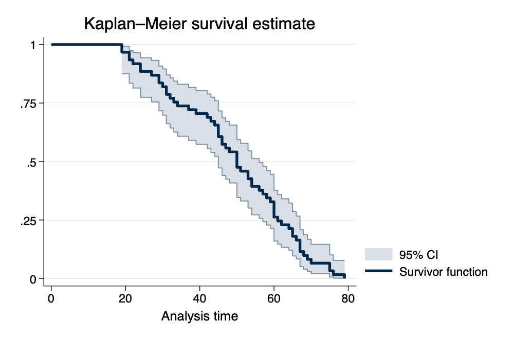
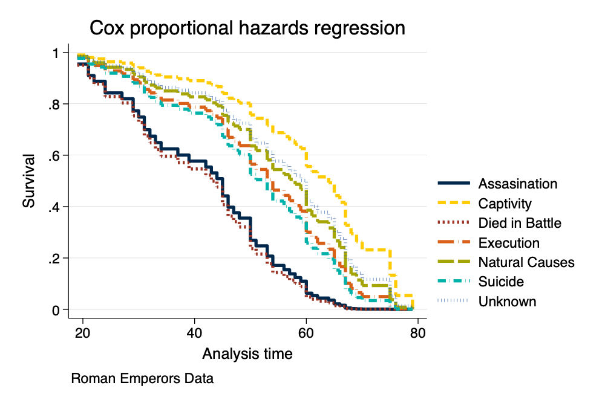

{width=50%}
{width=50%}This example uses data on the ages of death of Roman Emperors. Source unclear.
. clear all
. import delimited "https://raw.githubusercontent.com/agrogan1/newstuff/master/categorical/survival-analysis-and-event-history/emperors/emperors.csv > " (encoding automatically selected: ISO-8859-1) (16 vars, 68 obs)
. * we can't use the date() function . * because it does not work . * with dates prior to 100AD
. * generate birthdate = date(birth, "YMD")
. * generate deathdate = date(death, "YMD")
. generate birthyear = real(substr(birth, 1, 4)) // convert first 4 characters to real number (5 missing values generated)
. generate deathyear = real(substr(death, 1, 4)) // convert first 4 characters to real number
. * browse name name_full birth birthyear death deathyear
. generate age = deathyear - birthyear (5 missing values generated)
. * need to recalculate age for those born in BCE
. encode cause, generate(causeNUMERIC) // numeric version of cause of death
. codebook causeNUMERIC if age != . // show values of causeNUMERIC for non missing ages
────────────────────────────────────────────────────────────────────────────────────────────────────────────────────────────────────────────────────
causeNUMERIC (unlabeled)
────────────────────────────────────────────────────────────────────────────────────────────────────────────────────────────────────────────────────
Type: Numeric (long)
Label: causeNUMERIC
Range: [1,7] Units: 1
Unique values: 7 Missing .: 0/63
Tabulation: Freq. Numeric Label
23 1 Assassination
1 2 Captivity
4 3 Died in Battle
8 4 Execution
21 5 Natural Causes
5 6 Suicide
1 7 Unknown
stset The DataWe need to stset the data so that Stata knows that this is survival data with special characteristics. For those of you have used other commands, this is similar to using svyset or xtset.
The most commonly used syntax is something like stset timevar, failure(failvar) id(id) 1
There are many ways to specify
failvar, we outline the most straightforward. Consult Stata help for your exact situation.
. stset age // stset the data
Survival-time data settings
Failure event: (assumed to fail at time=age)
Observed time interval: (0, age]
Exit on or before: failure
──────────────────────────────────────────────────────────────────────────
68 total observations
5 event time missing (age>=.) PROBABLE ERROR
2 observations end on or before enter()
──────────────────────────────────────────────────────────────────────────
61 observations remaining, representing
61 failures in single-record/single-failure data
2,984 total analysis time at risk and under observation
At risk from t = 0
Earliest observed entry t = 0
Last observed exit t = 79
\[S(t)=Pr(T>t)\]
. sts graph, scheme(michigan)
Failure _d: 1 (meaning all fail)
Analysis time _t: age
. graph export mysurvival0.png, width(1000) replace file mysurvival0.png saved as PNG format
{width=50%}
. sts graph, by(causeNUMERIC) scheme(michigan) // survival curve by cause of death
Failure _d: 1 (meaning all fail)
Analysis time _t: age
. graph export mysurvival1.png, width(1000) replace file mysurvival1.png saved as PNG format
{width=50%}
As an opportunity to take a closer look at the graph, we take a look at cause of death by age for those who died in battle.
. tabulate age causeNUMERIC if causeNUMERIC == 3
│ causeNUMER
│ IC
age │ Died in B │ Total
───────────┼───────────┼──────────
19 │ 1 │ 1
32 │ 1 │ 1
50 │ 2 │ 2
───────────┼───────────┼──────────
Total │ 4 │ 4
We can then work to make the legend more informative.
. sts graph, by(causeNUMERIC) scheme(michigan) ///
> legend(pos(6) col(2) order(1 "Assasination" 2 "Captivity" 3 "Died in Battle" ///
> 4 "Execution" 5 "Natural Causes" 6 "Suicide" 7 "Unknown")) // survival curve w better legend
Failure _d: 1 (meaning all fail)
Analysis time _t: age
. graph export mysurvival2.png, width(1000) replace file mysurvival2.png saved as PNG format
 {width=50%}
{width=50%}
. stcox ib5.causeNUMERIC // Cox model
Failure _d: 1 (meaning all fail)
Analysis time _t: age
Iteration 0: log likelihood = -194.21354
Iteration 1: log likelihood = -190.65797
Iteration 2: log likelihood = -190.29078
Iteration 3: log likelihood = -190.28555
Iteration 4: log likelihood = -190.28555
Refining estimates:
Iteration 0: log likelihood = -190.28555
Cox regression with Breslow method for ties
No. of subjects = 61 Number of obs = 61
No. of failures = 61
Time at risk = 2,984
LR chi2(6) = 7.86
Log likelihood = -190.28555 Prob > chi2 = 0.2488
────────────────┬────────────────────────────────────────────────────────────────
_t │ Haz. ratio Std. err. z P>|z| [95% conf. interval]
────────────────┼────────────────────────────────────────────────────────────────
causeNUMERIC │
Assassination │ 1.887601 .6005266 2.00 0.046 1.011828 3.521387
Captivity │ .5304672 .5462988 -0.62 0.538 .0704779 3.992675
Died in Battle │ 3.344775 1.901632 2.12 0.034 1.097556 10.19313
Execution │ 1.506054 .6319318 0.98 0.329 .6617307 3.427677
Suicide │ .9063985 .5055625 -0.18 0.860 .3037693 2.704547
Unknown │ 1.33605 1.378549 0.28 0.779 .1768254 10.09487
────────────────┴────────────────────────────────────────────────────────────────
. stcurve, survival at(causeNUMERIC=(1(1)7)) /// > scheme(michigan) // basic survival curve by causeNUMERIC
. graph export mycox1.png, width(1000) replace file mycox1.png saved as PNG format
 {width=50%}
{width=50%}
. stcurve, survival ///
> at(causeNUMERIC=(1(1)7)) ///
> caption("Roman Emperors Data") ///
> legend(order(1 "Assasination" 2 "Captivity" 3 "Died in Battle" ///
> 4 "Execution" 5 "Natural Causes" 6 "Suicide" 7 "Unknown")) ///
> scheme(michigan) // more nicely formatted survival curve
. graph export mycox2.png, width(1000) replace file mycox2.png saved as PNG format
{width=50%}
failvair is often something like died.↩